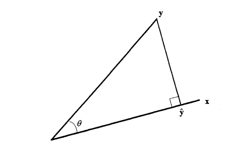

Chapter 6 Reoprésentation de la régression linéaire
6.1 Etat des lieux de la visualisation de la régression
6.1.1 More on Venn Diagrams for Regression
Kennedy (Kennedy 2002) extended the Venn diagram to the exposition of bias and variance in the context of the classical linear regression (CLR) model, written as y = Xb + e .
A compléter
6.1.2 A Geometric Approach to Compare Variables in a Regression Model
He proposes (Bring 1996) a geometric approaches to compare variables in a regression model.
This article gives a brief introduction to the geometric approach in regres- sion analysis, and then geometry is used to shed some light on the problem of comparing the “importance” of the in- dependent variables in a multiple regression model. Even though no final answer of how to assess variable impor- tance is given, it is still useful to illustrate the different measures geometrically to gain a better understanding of their properties.


A compléter
6.1.3 Two Additional Views of Linear Regression Coefficients
The author (Li 1964) proposes an interesting interpretation of the slope in the keast square method. The linear regression line of y on x, as determined by the method of least squares, passes through the central point with slope:

- As a weighted average slope.
This concept of weight for a slope is represented in the accompanying diagrams. (See Figure 1). The slope in the lefthand side diagram has a much larger weight than that in the righthand side for regression of y on x. If we were concerned with the regression of x on y, the reverse would be true. Note that the actual distance between the two points in the two diagrams is the same.

- As a contrast
*A détailler … ou pas …
6.1.4 Covariance and regression diagram
Notre point de départ pour ce package est le travail réalisé par notre professeur (Bousquet 2021)
schémas LS à insérer